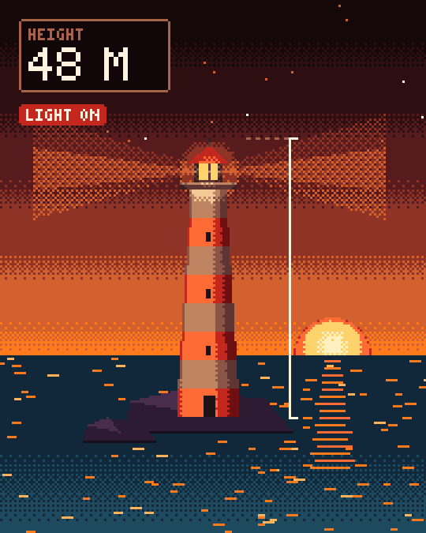
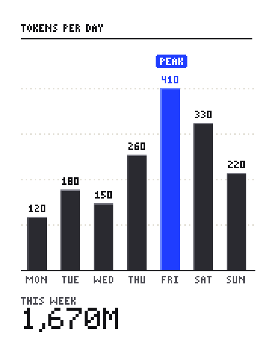
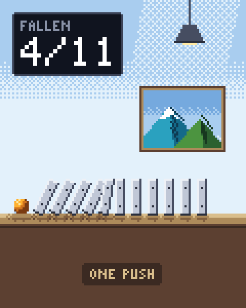
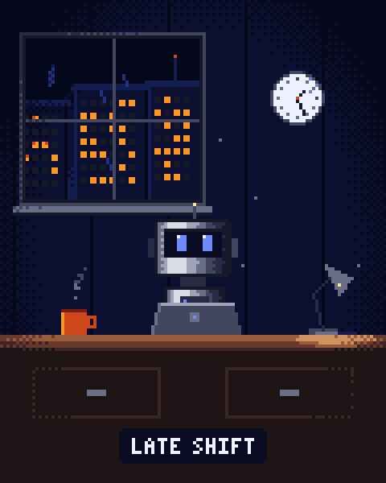
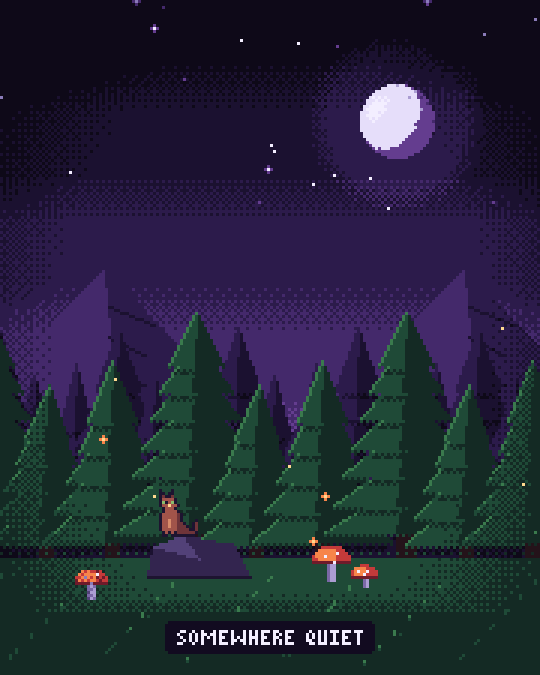
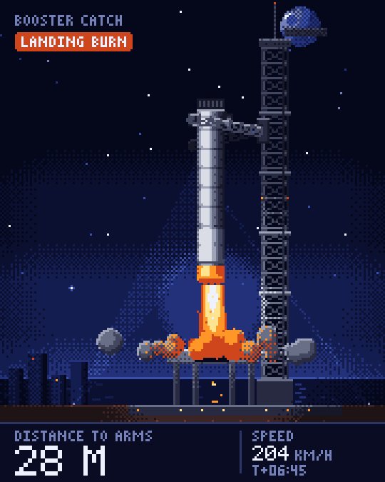

Pixel art animations made by Claude Code and rendered to sharp video. Every frame is drawn in code with a real palette, so nothing is blurry and every scene recolors in one command.
Set up Pixel Kit on this computer. I downloaded and unzipped it; find the folder named pixel-kit (check Downloads and Desktop first) that contains a pixelkit folder and requirements.txt. Do these steps in order, and ask me before installing anything outside that folder: 1. Check that Python 3.9 or newer is installed (python3 --version, or py --version on Windows). If it is missing, tell me how to install it and stop. 2. Copy the kit to ~/pixel-kit (on Windows %USERPROFILE%\pixel-kit). If ~/pixel-kit already exists, ask me before replacing anything, and never overwrite its scenes or out folders. 3. Create a virtual environment at ~/pixel-kit/.venv and install requirements.txt into it. 4. Install the skill by copying ~/pixel-kit/skill/pixel-kit to ~/.claude/skills/pixel-kit. 5. Run the install check from ~/pixel-kit: .venv/bin/python -m pixelkit doctor (Windows: .venv\Scripts\python -m pixelkit doctor). 6. Render the example as a test: .venv/bin/python -m pixelkit render examples/booster_catch.py, then open out/booster_catch.mp4 for me. 7. Tell me in a short list what you installed and where.
Use the pixel-kit skill to make a pixel animation of [what happens, e.g. "a hot air balloon rising out of a valley at sunrise while an altitude readout counts up"]. Format 4:5, about 8 seconds. Show me the contact sheet before you render the video.
Render scenes/[name].py in these color versions: the dusk palette, one hue of #1f3dff, and black and white. Put them side by side in a contact sheet so I can compare, then render the one I pick.
In scenes/[name].py: make the [thing] slower, start the readout at [number], and change the label to [text]. Show me the sheet again.
Turn scenes/[name].py into a template I can reuse: pull every value I would change (subject, numbers, labels, timing) into constants at the top with a comment on each, and save it to templates/[name].py.






--hue "#1f3dff"--mono